保卫的团队回防：【防守反击篇】
保卫的防守并不是静态防守，而是动态防守，相对于Even和DONO的逆天回防，我相信大部分队伍都做不到，那是建立在逆天的枪法和强悍的心里素质基础之上的，所以我在比赛中经常使用的是回防战术是：【保卫拖住潜伏，并不贪枪，其他队友迅速回防，同时在潜伏还没有下包或者刚下包后，还没有战稳脚步回过神的时候，开始回防】，当然像黑色的B，潜艇的B，异域小城的A，保卫很难拖住，那就依靠经常练习最拿手的杀敌技巧，放开杀，你能1个人干一群潜伏那最好不过了
黑色保卫回防：黑色这个图大家已经打烂了，所以这个图上多写一些总结，大家积极补充不足之处，对于潜伏B区下包后的回防，3个人怎么回防，推荐一个人卡B门，封红烟
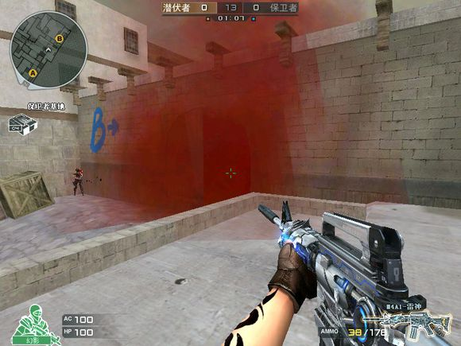
另外两个人如何走位，推荐一个人从45度到后花园，另外一个人从小道准备打B连接，这里B花园的人先到位，B连接的人一般不推荐先上，也可以选择者两个人一块从B连接或者两个人一块从B花园进
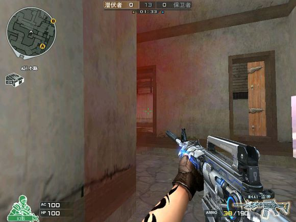
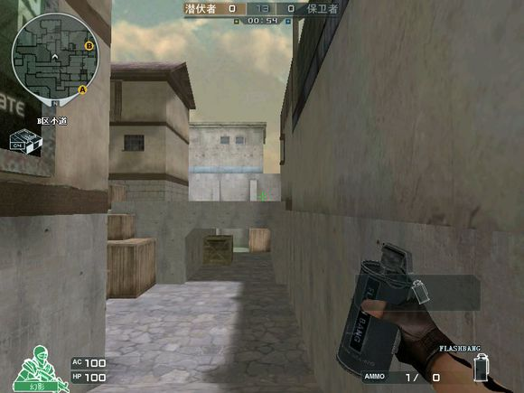
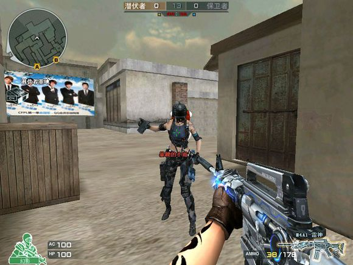
B连接的队友到位后，不推进B门的先进，等B仓库的打起来后，B门口的进
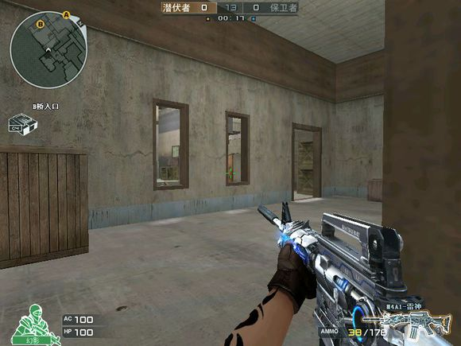
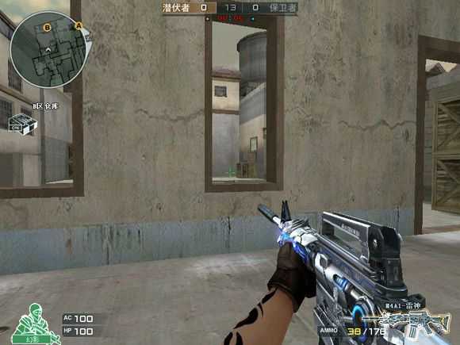
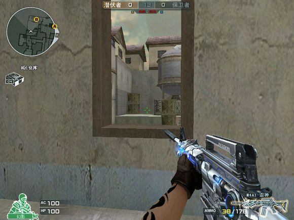
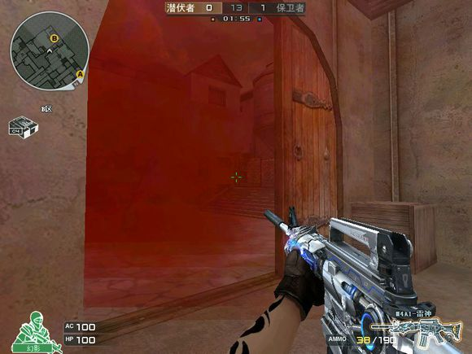
在回防B区时，个人认为B门的是关键，扔道具，开枪，吸引敌人的大部分精力，如果是AK，吐吐的声音，能够压制队友从B链接回防的脚步声，利用大部分人的惯性思维，大部分人都把B门口当做保卫回防的重点，所以我一般推荐从B链接或者花园选择回访。
回防A区，推荐A连接一个，小道一个，A拐一个，这里谁来当炮灰，推荐A狗的队友
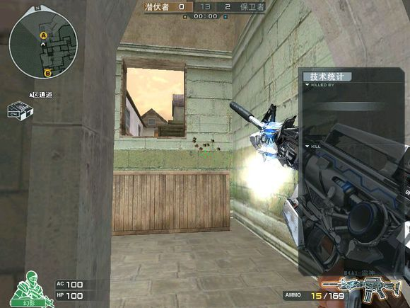
这里A狗是做假戏的关键，放枪，扔道具，扣手枪，能够让对手听到你马上要回访的决心，这说明你的功课做到位了，什么时候A拐的开始回防？
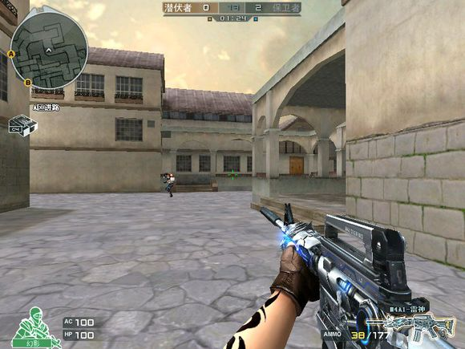
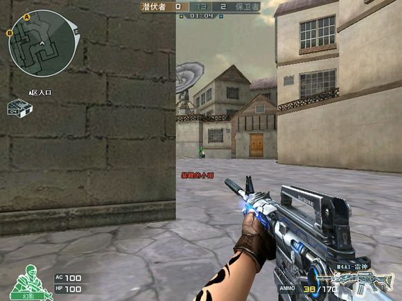
潜伏在没有下包前，可以大胆大脚步从潜伏家偷A拐，潜伏下过包后，一般都会下意识的看A屁股，这个时候A拐回访的效果已经打折了，
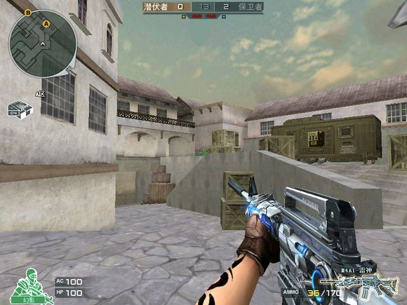
保卫达到截图A前坡后点位置的时候，就是A狗和A小道回访出击的时候，A狗是做假象的关键，同样，小道也可以做假戏，A拐是回访的关键，个人认为大部分潜伏都不会选择重兵看A拐，所以回访的效果比较好同样，保卫也可以选择A狗一个，A小道两个回访，效果一样很好。
比赛潜伏技巧，潜伏在B区下包后，推荐从B狗出去偷，同样的，B仓库的队友可以选择穿B门，吸引敌人足够的注意力
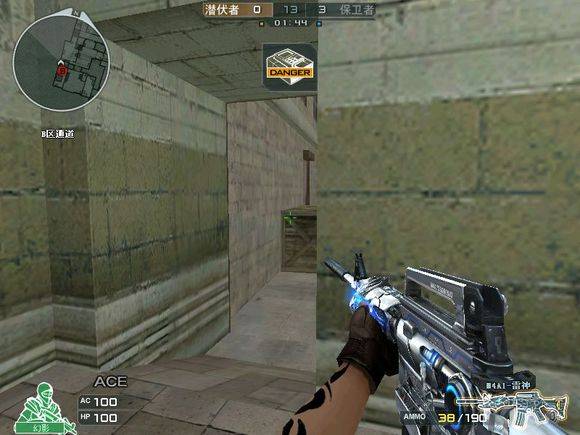
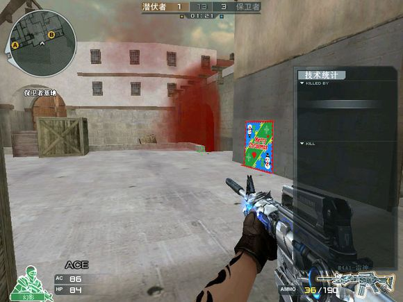
B区的防守常规站位，以3个人为例，这里是说死守的情况下，推荐仓库一个，另外两个人如何站位，推荐截图所说的位子

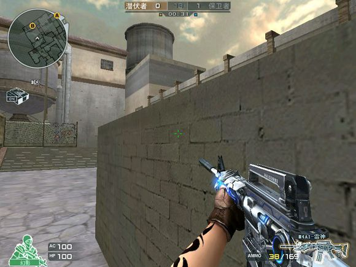
第一个照片很猥琐，可以穿区B仓库的敌人，也可以不间断的条，能够观察到B狗是否有敌人回防，如果B门口封红烟，仓库下的这个潜伏可以选择时不时蹲跳，观察保卫是否到B门
A区潜伏的技巧，如截图
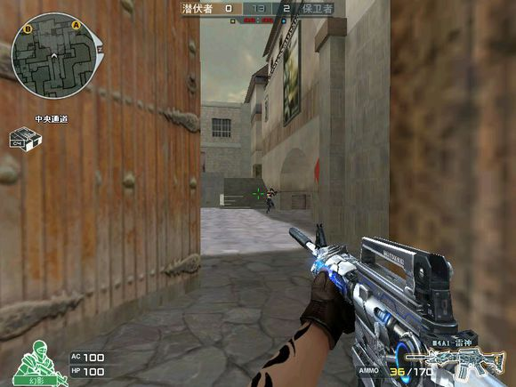
这个潜伏是从A小道跳下来的，什么时候出击，等下包后，5秒左右时间，或者队友报点敌人的位置后，一般保卫看到潜伏后，注意力都不在中门，为什么不推荐卡中门上，因为打小道的时候，需要集中火力，少了一个人，队友可能就攻不下小道，这里是在队友拿下A后，可以果断选择回小道，看准时机偷袭中路
【同每个图都一样，大部分潜伏在下包后，都会习惯性的认为哪个地方时敌人回防的重点，比如A去的小道和A狗，B区的B门，这个时候就可以利用对方的思维惯性，做足假戏，队友从其他位置绕，用孙子兵法所说就是：以整合，依奇胜。正面就是拖住对手，从背后下手，打击对手】
异域小镇保卫B区回防：相信这几个点是潜伏下包后最常用的防守位
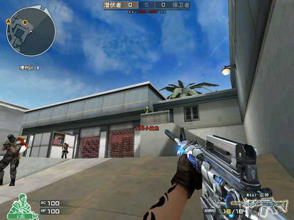
推荐酒吧一个，中路一个，如果三人回防，推荐酒吧两个，中路一个。如截图所示
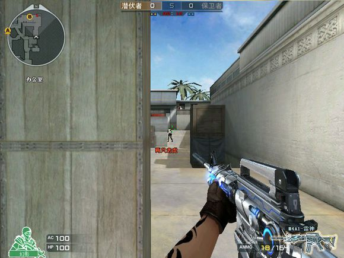
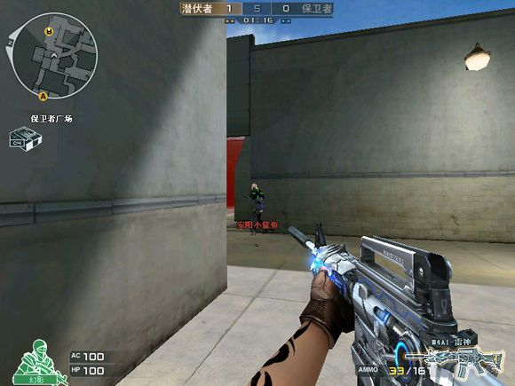
红烟雾的封锁，道具的投掷，武器的声音，吸引足够敌人的注意力，为酒吧的队友做掩护
A区如何防守：推荐下水道绕A大两个，或者一个A大，两个小道
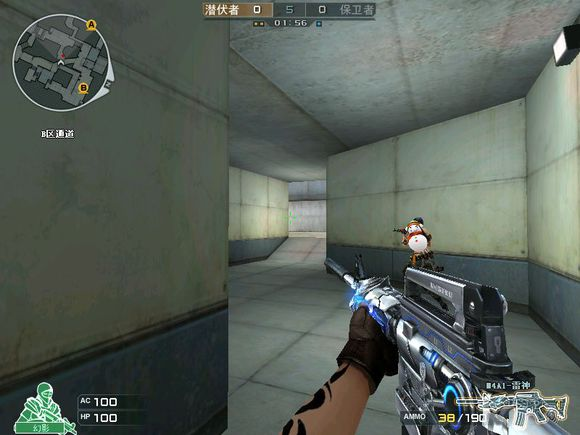
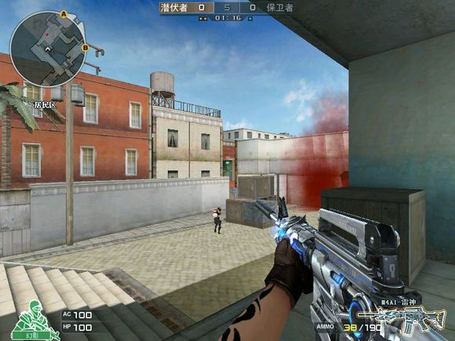
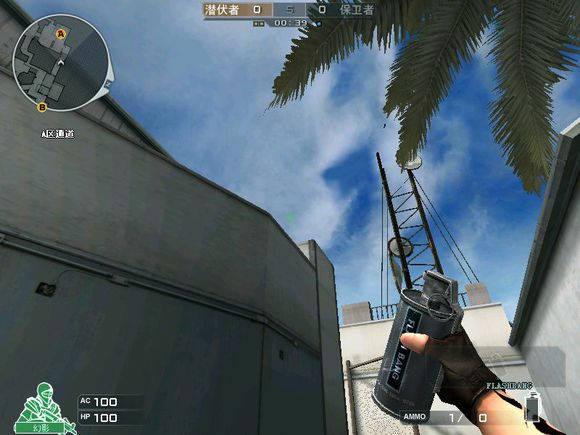
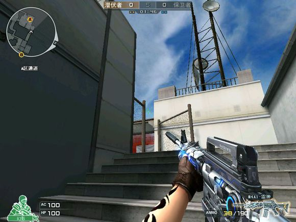
这里保卫在B区的一个很实用的技巧，如截图所示，站在二箱中间，蹲跳可以看到保卫从中路回防的情况，利用反弹闪，清对手
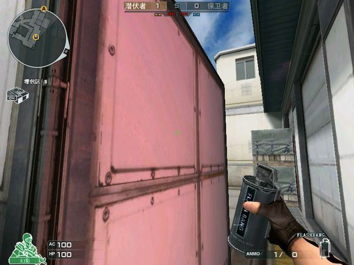
卫星基地：保卫回防A，推荐两个人走小道，一个人走A中门，
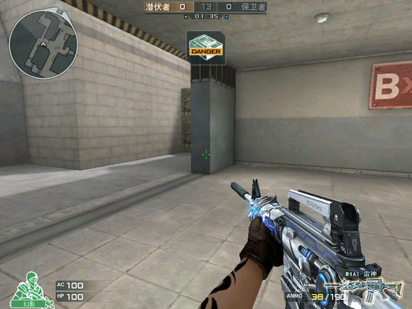
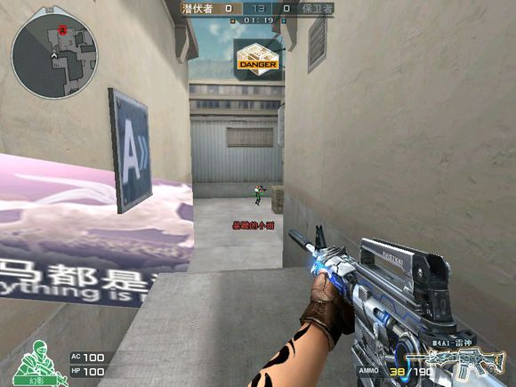
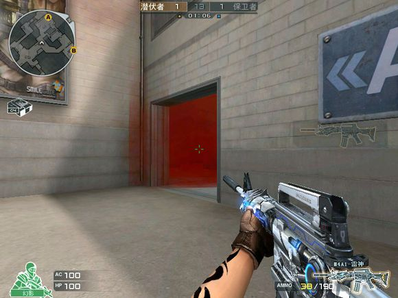
B区的回防推荐两个人或者三个人在红烟雾封锁到位后，从#家进
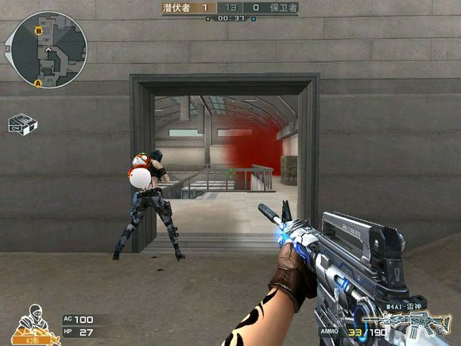
潜伏技巧，B区的铁箱子后，利用身法也可以观察到敌人的情况，如截图，在最后面的一个箱子后，蹲跳，同样可以看清楚保卫回防的情况。及时告诉队友。
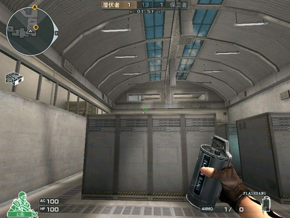
潜伏的小技巧，站在门口里面，贴着墙，可以听到保卫回防的情况，利用反弹闪，同样可以大胆出去清保卫
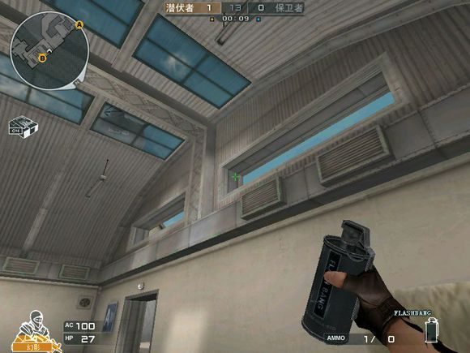
潜艇潜伏A包点防守，一般推荐炮弹正中央卡一个，石步坡疯红烟，顿起顿起，如果看见石步坡下来人了，就直接反闪
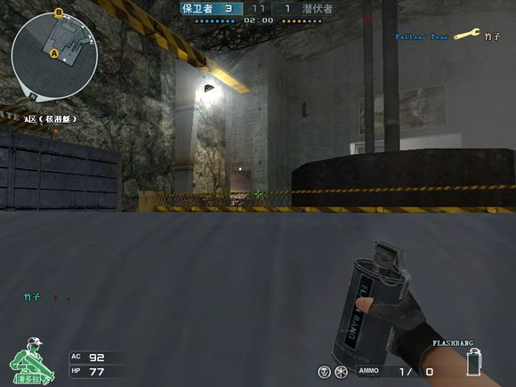
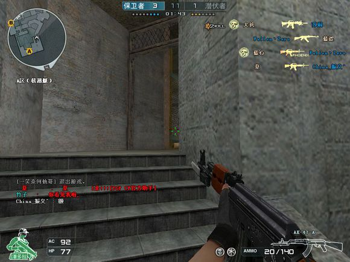
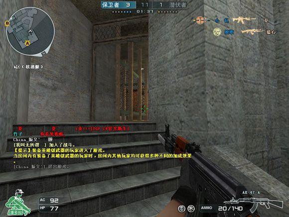
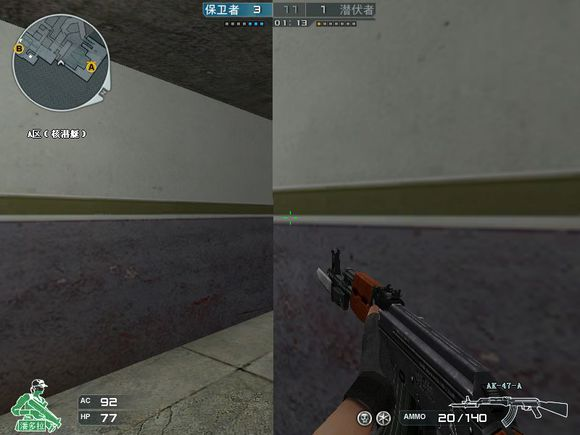
这个点卡一个下包后的潜伏，不建议死卡，听好保卫回防的脚步，直接出去，绝对让保卫吓一跳
B区潜伏的防守，这个高点的包，我相信大部分人都会下，保卫相当头疼，尤其是1v1的时候，潜伏可以选择卡小中门外场，也可以卡二楼和保卫玩猫猫，也可以在更衣室。
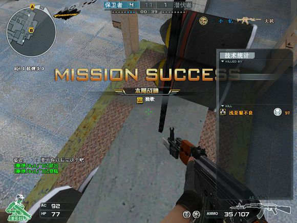
保卫如何回防：推荐A区【炮弹尾封红烟】，3个队友的话，两个红烟封炮弹尾效果更好，一个从A观察扔闪，闪炮弹前和5箱后的潜伏，或者在A观察跳下，观察下潜伏的大概位置，告诉A楼梯的队友，另外2个从A楼梯下，一个白之后直接下去，A观察的保卫不推荐下十步坡，而是等队友交上火后，在A观察打5箱左右的潜伏屁股，但是一定不要和炮弹尾和十步坡左面箱子的潜伏交火，敌人就等着你露头呢
B区的回防，大部分潜伏都认为截图的位置这个地方出来保卫另外两个队友从B更衣室回防，或者一个更衣室一个小中门，AK的声音可以掩护队友从外场回访的脚步
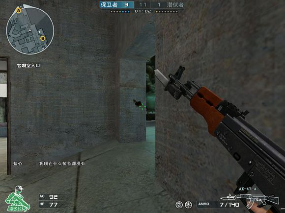